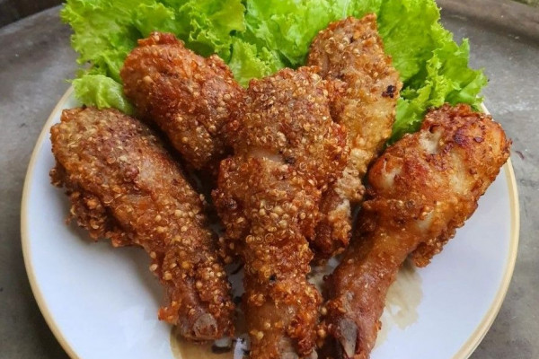
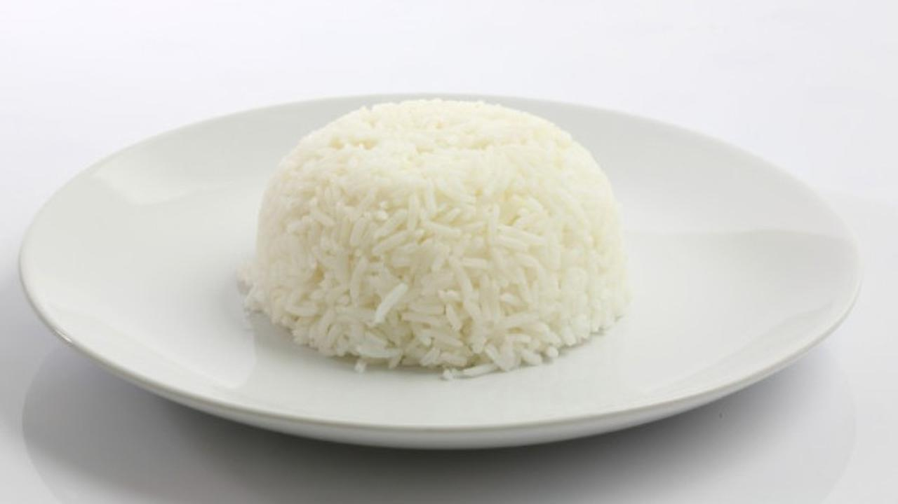
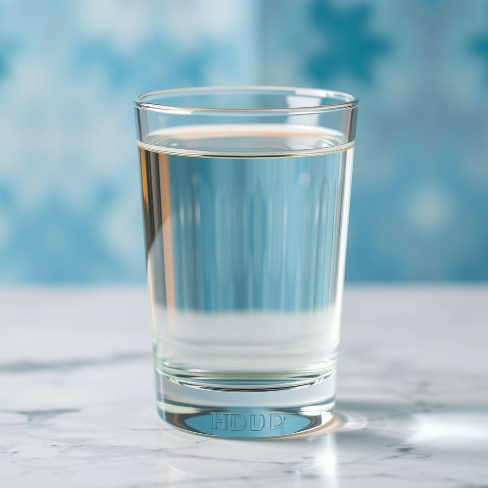

Menu Seimbang
Menu ini mengandung zat gizi lengkap untuk tubuh.

Ayam Kecombrang
Sumber protein, lemak, serta mengandung vitamin (B kompleks) dan mineral (fosfor, selenium).

Tumis Kangkung
Mengandung vitamin A, C, kalium, kalsium, dan zat besi, serta mengandung serat, protein, dan rendah kalori.

Nasi Putih
Sumber energi karbohidrat.

Pisang
Kaya akan vitamin B6, vitamin C, dan serat

Air Mineral
Menjaga keseimbangan cairan tubuh.